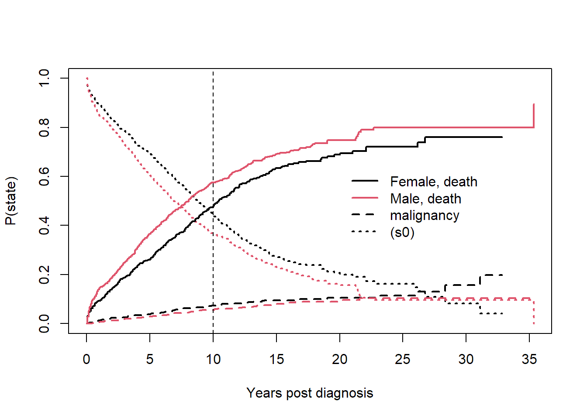
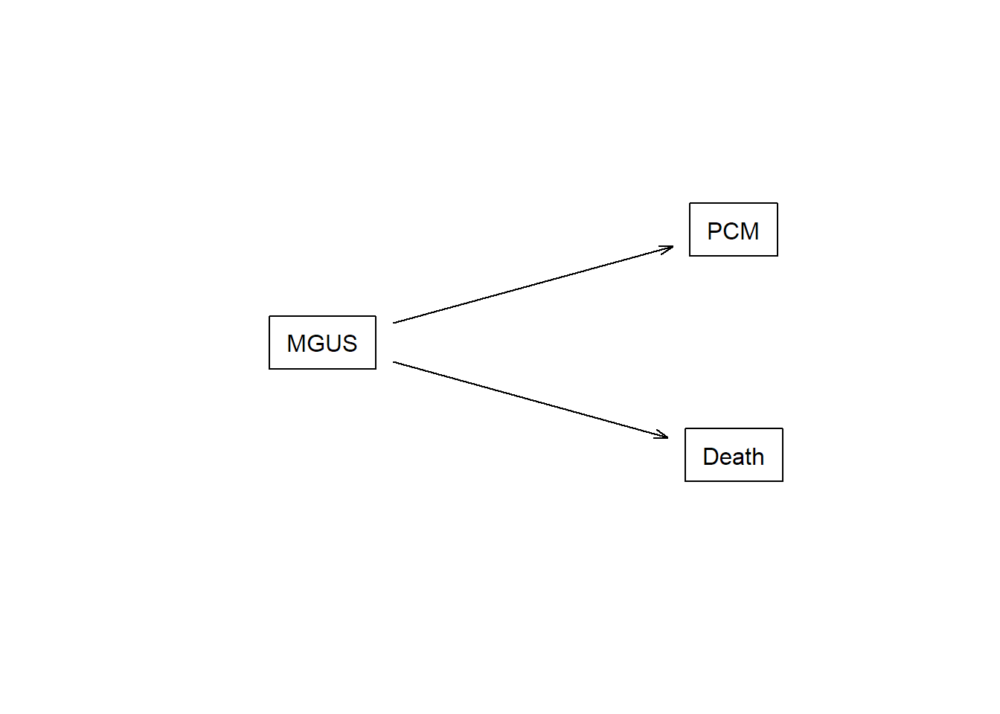

Joint models
Consider again the mgus2 dataset. This is a competing risks setting, with the two possible causes of failure: death and pcm.
crfit <- survfit(Surv(etime, event) ~ sex, eventglm::mgus2)
summary(crfit, times = 120)
## Call: survfit(formula = Surv(etime, event) ~ sex, data = eventglm::mgus2)
##
## sex=F
## time n.risk n.event P((s0)) P(pcm) P(death)
## 120.0000 214.0000 331.0000 0.4456 0.0739 0.4805
##
## sex=M
## time n.risk n.event P((s0)) P(pcm) P(death)
## 120.0000 210.0000 450.0000 0.3695 0.0553 0.5752
print(crfit, rmean = 120)
## Call: survfit(formula = Surv(etime, event) ~ sex, data = eventglm::mgus2)
##
## n nevent rmean*
## sex=F, (s0) 631 0 82.983485
## sex=M, (s0) 753 0 74.808346
## sex=F, pcm 631 59 4.794595
## sex=M, pcm 753 56 3.501305
## sex=F, death 631 370 32.221921
## sex=M, death 753 490 41.690349
## *mean time in state, restricted (max time = 120 )
plot(crfit, col=1:2, noplot="",
lty=c(3,3,2,2,1,1), lwd=2, xscale=12,
xlab="Years post diagnosis", ylab="P(state)")
legend(240, .65, c("Female, death", "Male, death", "malignancy", "(s0)"),
lty=c(1,1,2,3), col=c(1,2,1,1), bty='n', lwd=2)
abline(v = 120, lty = 2)

This is the competing risks setting, which can be described with the multi-state model in the figure below.
connect <- matrix(0, nrow = 3, ncol = 3,
dimnames = lapply(1:2, \(i) c("MGUS", "PCM", "Death")))
connect[1, 2:3] <- 1
statefig(c(1, 2), connect)

Suppose we are interested in the effect of the mspike variable on either pcm or death. We fit the following models
mgus2 <- subset(mgus2, !is.na(mspike))
mgcipcm <- cumincglm(Surv(etime, event) ~ mspike, cause = "pcm", time = 120,
data = mgus2)
mgcideath <- cumincglm(Surv(etime, event) ~ mspike, cause = "death", time = 120,
data = mgus2)
which gives us two coefficients for mspike.
Exercise
Write a function to perform simultaneous inference on the two coefficients. That is, find a way to test the null hypothesis that both mspike coefficients (in the pcm model and the death model) are equal to 0.
Solution 1
This solution involves stacking the estimating equations for both models, and the refitting with an indicator for the outcome type.
jointfit <- function(fit1, fit2) {
bform <- update.formula(fit1$formula, .PO ~ .)
dset1 <- get_all_vars(bform[-2], fit1$data)
dset1$.PO <- fit1$y
dset1$model <- "fit1"
dset1$id <- 1:nrow(dset1)
dset2 <- get_all_vars(bform[-2], fit2$data)
dset2$.PO <- fit2$y
dset2$model <- "fit2"
dset2$id <- 1:nrow(dset2)
dset <- rbind(dset1, dset2)
nform <- update.formula(bform, ~ .:model + model - 1)
geefit <- geese(nform, data = dset[order(dset$id),], id = id)
geefit
}
jointm <- jointfit(mgcipcm, mgcideath)
mstat <- c(t(jointm$beta[3:4]) %*% solve(jointm$vbeta[3:4, 3:4]) %*% jointm$beta[3:4])
pchisq(mstat, df = 2, lower.tail = FALSE)
## [1] 0.000235711
Solution 2
This solution uses the bootstrap to estimate the covariance matrix of the two coefficients.
B <- 2000
beta.boot <- matrix(NA, nrow = B, ncol = 2)
for(j in 1:B){
mgus2.j <- mgus2[sample(1:nrow(mgus2), nrow(mgus2), replace = TRUE),]
mgcipcm.j <- cumincglm(Surv(etime, event) ~ mspike, cause = "pcm", time = 120,
data = mgus2.j)
mgcideath.j <- cumincglm(Surv(etime, event) ~ mspike, cause = "death", time = 120,
data = mgus2.j)
beta.boot[j,] <- c(mgcipcm.j$coefficients[2], mgcideath.j$coefficients[2])
}
mstat <- c(mgcipcm$coefficients[2], mgcideath$coefficients[2]) %*%
solve(cov(beta.boot)) %*% c(mgcipcm$coefficients[2], mgcideath$coefficients[2])
pchisq(mstat, df = 2, lower.tail = FALSE)
## [,1]
## [1,] 0.0002151841
LS0tDQp0aXRsZTogIkpvaW50IG1vZGVsbGluZyBtdWx0aXBsZSBlbmRwb2ludHMiDQpvdXRwdXQ6DQogIGh0bWxfZG9jdW1lbnQ6DQogICAgY29kZV9mb2xkaW5nOiBzaG93DQpiaWJsaW9ncmFwaHk6IHJlZnMuYmliDQotLS0NCg0KDQojIyMgTGVhcm5pbmcgb2JqZWN0aXZlcyB7LmFsZXJ0IC5hbGVydC1zdWNjZXNzfQ0KDQpJbiB0aGlzIGxlc3NvbiB5b3Ugd2lsbCANCg0KMS4gV3JpdGUgYSBmdW5jdGlvbiB0byBwZXJmb3JtIHNpbXVsdGFuZW91cyBpbmZlcmVuY2UgZm9yIGNvdmFyaWF0ZSBlZmZlY3RzIG9uIG11bHRpcGxlIG91dGNvbWVzIGluIHRoZSBjb21wZXRpbmcgcmlza3Mgc2V0dGluZy4gDQoNCiMjIFNldHVwDQoNCkxpYnJhcnkgdGhlIGBzdXJ2aXZhbGAgcGFja2FnZSBhbmQgdGhlbiB0aGUgYGV2ZW50Z2xtYCBwYWNrYWdlLCBhbmQgdGhlbiB0aGUgYGdlZXBhY2tgIHBhY2thZ2UuIA0KDQoNCmBgYHtyfQ0KbGlicmFyeShzdXJ2aXZhbCkNCmxpYnJhcnkoZXZlbnRnbG0pDQpsaWJyYXJ5KGdlZXBhY2spDQpgYGANCg0KIyMgSm9pbnQgbW9kZWxzDQoNCkNvbnNpZGVyIGFnYWluIHRoZSBgbWd1czJgIGRhdGFzZXQuIFRoaXMgaXMgYSBjb21wZXRpbmcgcmlza3Mgc2V0dGluZywgd2l0aCB0aGUgdHdvIHBvc3NpYmxlIGNhdXNlcyBvZiBmYWlsdXJlOiBkZWF0aCBhbmQgcGNtLiANCg0KYGBge3J9DQpjcmZpdCA8LSBzdXJ2Zml0KFN1cnYoZXRpbWUsIGV2ZW50KSB+IHNleCwgZXZlbnRnbG06Om1ndXMyKQ0Kc3VtbWFyeShjcmZpdCwgdGltZXMgPSAxMjApDQpwcmludChjcmZpdCwgcm1lYW4gPSAxMjApDQpwbG90KGNyZml0LCBjb2w9MToyLCAgbm9wbG90PSIiLA0KICAgICBsdHk9YygzLDMsMiwyLDEsMSksIGx3ZD0yLCB4c2NhbGU9MTIsDQogICAgIHhsYWI9IlllYXJzIHBvc3QgZGlhZ25vc2lzIiwgeWxhYj0iUChzdGF0ZSkiKQ0KbGVnZW5kKDI0MCwgLjY1LCBjKCJGZW1hbGUsIGRlYXRoIiwgIk1hbGUsIGRlYXRoIiwgIm1hbGlnbmFuY3kiLCAiKHMwKSIpLA0KICAgICAgIGx0eT1jKDEsMSwyLDMpLCBjb2w9YygxLDIsMSwxKSwgYnR5PSduJywgbHdkPTIpDQphYmxpbmUodiA9IDEyMCwgbHR5ID0gMikNCmBgYA0KDQpUaGlzIGlzIHRoZSBfY29tcGV0aW5nIHJpc2tzXyBzZXR0aW5nLCB3aGljaCBjYW4gYmUgZGVzY3JpYmVkIHdpdGggdGhlIG11bHRpLXN0YXRlIG1vZGVsIGluIHRoZSBmaWd1cmUgYmVsb3cuIA0KDQpgYGB7cn0NCmNvbm5lY3QgPC0gbWF0cml4KDAsIG5yb3cgPSAzLCBuY29sID0gMywgDQogICAgICAgICAgICAgICAgICBkaW1uYW1lcyA9IGxhcHBseSgxOjIsIFwoaSkgYygiTUdVUyIsICJQQ00iLCAiRGVhdGgiKSkpDQpjb25uZWN0WzEsIDI6M10gPC0gMQ0Kc3RhdGVmaWcoYygxLCAyKSwgY29ubmVjdCkNCmBgYA0KDQoNClN1cHBvc2Ugd2UgYXJlIGludGVyZXN0ZWQgaW4gdGhlIGVmZmVjdCBvZiB0aGUgbXNwaWtlIHZhcmlhYmxlIG9uIF9fZWl0aGVyIHBjbSBvciBkZWF0aF9fLiBXZSBmaXQgdGhlIGZvbGxvd2luZyBtb2RlbHMNCmBgYHtyfQ0KbWd1czIgPC0gc3Vic2V0KG1ndXMyLCAhaXMubmEobXNwaWtlKSkNCg0KbWdjaXBjbSA8LSBjdW1pbmNnbG0oU3VydihldGltZSwgZXZlbnQpIH4gbXNwaWtlLCBjYXVzZSA9ICJwY20iLCB0aW1lID0gMTIwLCANCiAgICAgICAgICAgICAgICAgICBkYXRhID0gbWd1czIpDQptZ2NpZGVhdGggPC0gY3VtaW5jZ2xtKFN1cnYoZXRpbWUsIGV2ZW50KSB+IG1zcGlrZSwgY2F1c2UgPSAiZGVhdGgiLCB0aW1lID0gMTIwLCANCiAgICAgICAgICAgICAgICAgICBkYXRhID0gbWd1czIpDQpgYGANCndoaWNoIGdpdmVzIHVzIHR3byBjb2VmZmljaWVudHMgZm9yIGBtc3Bpa2VgLiANCg0KDQojIyMgRXhlcmNpc2Ugey5hbGVydCAuYWxlcnQtd2FybmluZ30NCg0KV3JpdGUgYSBmdW5jdGlvbiB0byBwZXJmb3JtIHNpbXVsdGFuZW91cyBpbmZlcmVuY2Ugb24gdGhlIHR3byBjb2VmZmljaWVudHMuIFRoYXQgaXMsIGZpbmQgYSB3YXkgdG8gdGVzdCB0aGUgbnVsbCBoeXBvdGhlc2lzIHRoYXQgYm90aCBtc3Bpa2UgY29lZmZpY2llbnRzIChpbiB0aGUgcGNtIG1vZGVsIGFuZCB0aGUgZGVhdGggbW9kZWwpIGFyZSBlcXVhbCB0byAwLiANCg0KDQo8ZGV0YWlscz4NCjxzdW1tYXJ5PjxzdHJvbmc+U29sdXRpb24gMTwvc3Ryb25nPjwvc3VtbWFyeT4NCg0KVGhpcyBzb2x1dGlvbiBpbnZvbHZlcyBzdGFja2luZyB0aGUgZXN0aW1hdGluZyBlcXVhdGlvbnMgZm9yIGJvdGggbW9kZWxzLCBhbmQgdGhlIHJlZml0dGluZyB3aXRoIGFuIGluZGljYXRvciBmb3IgdGhlIG91dGNvbWUgdHlwZS4gDQoNCmBgYHtyfQ0Kam9pbnRmaXQgPC0gZnVuY3Rpb24oZml0MSwgZml0Mikgew0KICANCiAgYmZvcm0gPC0gdXBkYXRlLmZvcm11bGEoZml0MSRmb3JtdWxhLCAuUE8gfiAuKQ0KICANCiAgZHNldDEgPC0gZ2V0X2FsbF92YXJzKGJmb3JtWy0yXSwgZml0MSRkYXRhKQ0KICBkc2V0MSQuUE8gPC0gZml0MSR5DQogIGRzZXQxJG1vZGVsIDwtICJmaXQxIg0KICBkc2V0MSRpZCA8LSAxOm5yb3coZHNldDEpDQogIA0KICBkc2V0MiA8LSBnZXRfYWxsX3ZhcnMoYmZvcm1bLTJdLCBmaXQyJGRhdGEpDQogIGRzZXQyJC5QTyA8LSBmaXQyJHkNCiAgZHNldDIkbW9kZWwgPC0gImZpdDIiDQogIGRzZXQyJGlkIDwtIDE6bnJvdyhkc2V0MikNCiAgDQogIGRzZXQgPC0gcmJpbmQoZHNldDEsIGRzZXQyKQ0KICANCiAgbmZvcm0gPC0gdXBkYXRlLmZvcm11bGEoYmZvcm0sIH4gLjptb2RlbCArIG1vZGVsIC0gMSkNCiAgDQogIGdlZWZpdCA8LSBnZWVzZShuZm9ybSwgZGF0YSA9IGRzZXRbb3JkZXIoZHNldCRpZCksXSwgaWQgPSBpZCkNCiAgDQogIGdlZWZpdA0KICANCn0NCg0Kam9pbnRtIDwtIGpvaW50Zml0KG1nY2lwY20sIG1nY2lkZWF0aCkNCg0KDQptc3RhdCA8LSBjKHQoam9pbnRtJGJldGFbMzo0XSkgJSolIHNvbHZlKGpvaW50bSR2YmV0YVszOjQsIDM6NF0pICUqJSBqb2ludG0kYmV0YVszOjRdKQ0KcGNoaXNxKG1zdGF0LCBkZiA9IDIsIGxvd2VyLnRhaWwgPSBGQUxTRSkNCmBgYA0KPC9kZXRhaWxzPg0KDQoNCjxkZXRhaWxzPg0KPHN1bW1hcnk+PHN0cm9uZz5Tb2x1dGlvbiAyPC9zdHJvbmc+PC9zdW1tYXJ5Pg0KDQpUaGlzIHNvbHV0aW9uIHVzZXMgdGhlIGJvb3RzdHJhcCB0byBlc3RpbWF0ZSB0aGUgY292YXJpYW5jZSBtYXRyaXggb2YgdGhlIHR3byBjb2VmZmljaWVudHMuIA0KDQpgYGB7ciwgY2FjaGU9VFJVRX0NCkIgPC0gMjAwMA0KYmV0YS5ib290IDwtIG1hdHJpeChOQSwgbnJvdyA9IEIsIG5jb2wgPSAyKQ0KDQpmb3IoaiBpbiAxOkIpew0KIA0KICBtZ3VzMi5qIDwtIG1ndXMyW3NhbXBsZSgxOm5yb3cobWd1czIpLCBucm93KG1ndXMyKSwgcmVwbGFjZSA9IFRSVUUpLF0NCiAgDQogIG1nY2lwY20uaiA8LSBjdW1pbmNnbG0oU3VydihldGltZSwgZXZlbnQpIH4gbXNwaWtlLCBjYXVzZSA9ICJwY20iLCB0aW1lID0gMTIwLCANCiAgICAgICAgICAgICAgICAgICBkYXRhID0gbWd1czIuaikNCiAgbWdjaWRlYXRoLmogPC0gY3VtaW5jZ2xtKFN1cnYoZXRpbWUsIGV2ZW50KSB+IG1zcGlrZSwgY2F1c2UgPSAiZGVhdGgiLCB0aW1lID0gMTIwLCANCiAgICAgICAgICAgICAgICAgICBkYXRhID0gbWd1czIuaikNCiAgDQogIGJldGEuYm9vdFtqLF0gPC0gYyhtZ2NpcGNtLmokY29lZmZpY2llbnRzWzJdLCBtZ2NpZGVhdGguaiRjb2VmZmljaWVudHNbMl0pDQoNCn0NCg0KbXN0YXQgPC0gYyhtZ2NpcGNtJGNvZWZmaWNpZW50c1syXSwgbWdjaWRlYXRoJGNvZWZmaWNpZW50c1syXSkgJSolIA0KICBzb2x2ZShjb3YoYmV0YS5ib290KSkgJSolIGMobWdjaXBjbSRjb2VmZmljaWVudHNbMl0sIG1nY2lkZWF0aCRjb2VmZmljaWVudHNbMl0pDQpwY2hpc3EobXN0YXQsIGRmID0gMiwgbG93ZXIudGFpbCA9IEZBTFNFKQ0KYGBgDQo8L2RldGFpbHM+DQoNCg0K